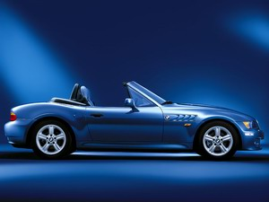

|
Здравствуйте, дорогие друзья!
Давненько не брала я в руки пера, а между тем произошло немало событий, поистине достойных описания.
Основное и наипервейшее из них - это покупка дома. Да, дорогие наши! Мы наконец-то приобрели свое собственное жилище.
Или, точнее говоря, собственным оно будет медленно становиться в течение последующих 20-ти с лишним лет, как бы грустно
сие не звучало.
Другим немаловажным событием является покупка (о боже! опять покупка...) второй машины, если даже не сказать, что это
событие, вообще говоря, слегка предшествовало покупке дома, не заслоняя, тем не менее, глобальности последнего.
Может, поэтому лучше начать с машины?.. Вот, скажете вы, - ездили, ездили по миру, наслаждались, восхищались красотами,
а теперь вдруг ни с того ни с сего поглотились жаждой наживы. Неужели больше не будет путешествий, романтики, высоких
полетов души (за душу не скажу, но о высоких полетах будет ниже)? Не дождетесь! :) Будет, конечно, будет! Просто так уж
устроена жизнь, что иногда приходится чего-то покупать, временно связывая свои крылья, дабы затем расправить их с новой,
неведомой ранее силой и мощью, дабы покорить те просторы, которые дотоле были недосягаемы. С каждым материальным
приобретением ты приобретаешь нечто большее, приобретаешь духовное. То есть, по сути, вознаграждаешься новым полетом,
не теряя старых. Но чем больше есть, тем больше хочется. Чем выше взлетел, тем сильнее тянет еще выше. Посему волей-не
волей задумаешься о материальном. Материальное - ничто само по себе. Это - лишь пища для души. Душа же не долго будет
теплиться без материальной пищи. Таким образом, жажда наживы и жажда полетов - взаимопорождающи.
Взять тот же дом. Птицы вьют гнездышки не для того чтоб разжиться, но для того, чтобы дать жизнь новому поколению, чтобы
дать ему возможность совершить свой собственный полет, который одновременно и твой тоже. Новый, неизведанный полет. У нас,
правда, пока только кот из тех, кто совершает полеты по дому, но ведь и он - живое существо, - молодое, растущее, радующееся
всякому большому пространству.
Опять же не будем сравнивать себя с птицами и отметим, что для гомо сапиенс дом - это гораздо больше, чем гнездышко.
Это - полет мысли, души, фантазии! Рентованное помещение, как ни старайся, ты не сможешь сделать своим. В каждом украшении,
в каждой картинке, в каждой стенке ты всегда будешь находить отголосок того чувства, что все это лишь временно. А время,
как сие не парадоксально, - это та постоянная субстанция, которая имеет вредную привычку вечно стеснять тебя в чем-то,
безжалостно крадя твою драгоценную свободу. И реально свободным ты чувствуешь себя либо в своем доме, либо, наверное,
под открытым небом. Лишь свобода позволяет нам открыться полностью, выявить всю фантазию и все таланты. Лишь благодаря ей
мы совершаем те полеты, над коими время не властно.

А машина? - спросят некоторые читатели, - это либо нужда, либо роскошь? И будут почти правы, ибо это и нужда, и роскошь
одновременно. Нужда - это вторая машина, роскошь - это какая! машина. Но и то, и другое порождено жаждой свободы. В нужде
мы стремимся получить свободу, в роскоши пытаемся сделать ее еще свободнее.
Привязывая вышесказанное к прозе жизни, я могу сказать, что с приобретением второй машины мы оба с Андрюшей получили свободу
передвижения, особенно если учесть, что наш новый дом располагается в элитном спальном районе, а посему станции метро и
остановки автобусов - далеко не самые близкие к нам пункты. Мне теперь не приходится ждать Андрюшу, чтобы куда-то съездить.
Мне не обязательно рано вставать, чтобы ехать с ним на работу (он ведь у нас еще та ранняя птаха). Я просто беру машину и
еду, куда и когда мне заблагорассудится. В свою очередь, Андрюше нет причин унывать, если я вдруг "увела" машину, а ему
приспичило куда-то податься.
Что касается роскоши, то эта новая машина - просто рассадник духовных благ. Материальные блага я отстаивать не берусь,
ибо "кушает" эта машина, дай бог каждому, - точнее, не дай бог каждому. Один ее вид доставляет большое эстетическое
наслаждение. Люди на улице не оставляют ее без внимания. И что приятно, их лица начинают светиться ни завистью, ни
злобностью, нет, но тем же самым лучистым светом, который она, наша машина, излучает. И если у этих людей есть шанс
подойти и что-то сказать нам (то есть если мы не мчимся по хайвею), то они не теряют его: подходят и с искренними улыбками
на лицах восклицают: Какая красивая машина!
Не буду больше томить читателя неизвестностью. Я уже и сама притомилась, не зная, в какое место всего лучше воткнуть
наименование машины. Так что вставлю прямо здесь: родстер BMW Z3, цвет atlantic blue.
Отступление. Ладно, мы привыкли к возгласам относительно бимера, но тут довольно-таки недавно еду я с работы на добром,
старом Гранпришнике, машин вокруг дофига, всюду пробки, состояние уставшее, лицо ничего не выражающее. Останавливаюсь на
светофоре, случайно оборачиваю взгляд влево и вижу, как дядичка из соседней машины усиленно кажет мне палец. :) Но не
средний, а большой. Что такое? - мыслю, открываю форточку, он тоже открывает и, все так же взбрасывая вверх палец и
возбужденно сияя глазами, кричит: Nice car! Nice car! Типа: классная тачка! Я судорожно озираюсь вокруг своей машины,
пытаясь понять, не забралась ли я по ошибке в бимер, но потом и сама расплываюсь в улыбке. Так и доехала, улыбаясь, до
самого дома. Настроение сразу поднялось, трафик стал лучше, жить стало легче! Спасибо дядичке! Дома рассказала историю
Андрюше, а он и спрашивает: ты, мол, не сказала ему, какая машина у тебя в гараже стоит? - Да я и забыла про ту машину от
счастья.
Если первое духовное благо, дарованное нам нашей маленькой бмвушечкой, имеет статически-эстетический характер, то второе,
и даже большее счастье - это сам процесс! Это скорость! Резкость! Быстрота маневров! Это ветер, стремительно несущийся тебе
в лицо! Это сладкое щемление изнутри! Адреналин! Это... Ну разве это не полет???!!! Разве это не свобода???!!!
Почти сразу же после покупки машины, а также дома, мы ломанулись к нашим друзьям в Оттаву. Вот радости-то было! На одном из
участков пути, наиболее безопасном как в смысле движения, так и в смысле присутствия полиции на дороге, Андрюша разогнал
машину до 210 км в час.
С открытым верхом оно тем более кажется, что сейчас взлетим!
Комментарий Андрея:
Кстати, на канадском сайте БМВ на страничке спецификаций, а конкретно разделе Performance - опечатка. Там утверждается,
что "Top speed (electronically limited) 206 km/h". Это совершенно однозначно опечатка, поскольку на всех остальных сайтах,
и особенно в бумажной документации на машину
сказано четко, что лимит 226км/ч - после этого включается ограничитель :( Но не все так печально - этот ограничитель можно снять
если перепрограммировать бортовой компьютер - $400US, и нет больше отраничителя :) А технический предел где-то около 280-290.
Быстрее только вниз с горки :)
Кстати, подобный ограничитель есть практически на всех машинах, продающихся в Северной Америке. Просто большинство владельцев
этих машин о нем не догадываются :) Например, на нашем Pontiac GrandPrix GT ограничитель стоит на 180км/ч. Мы уже много раз
проверяли :)
Сейчас даже кажется странным, что изначально мы собирались покупать совсем не эту машину. Мы хотели обыкновенный, простой
330-й бимер. Уже и потестдрайвили его, присмотрелись, все обсудили с агентом (агент, кстати, прикольный. Несмотря на то, что
он - китаец, а китайцы обычно не славятся безупречным вождением, он водит машину просто классно! И главное, хорошо чувствуется
еще издалека, что он безумно любит все эти BMW. Лишь начинает говорить о той или иной тачке, как глаза его принимаются
сверкать яркими веселыми искорками.), но саму сделку оставили до следующего раза, сославшись на то, что раньше покупки дома
нам не очень-то имеет смысл брать вторую машину. - Ставить некуда. Агент, правда, сказал, что мы ее еще ждать будем полтора
месяца. И мы прикинули, что придем к нему сразу после подписания бумаг на дом, дабы точно знать, когда у нас намечается дата
въезда и, соответственно, дата выезда из апартаментов.
Как и обещали, мы пришли. Но только на сей раз решили пообсуждать и примериться к Z3, потому что буквально за несколько
дней до этого Андрюша заприметил в телевизионной рекламе, что процент на конкретно этот бимер сейчас меньше, чем обычно,
но что продолжаться это будет не вечно, - временный, так сказать, promotion (посмотрела в словаре, как это слово на русский
перевести, - оказалось: поощрение, стимулирование). И вот как попала Андрюше шлея под хвост, так и не выбить. А мне почему-то
вначале эта машинка виделась смешной, с закрытым верхом так и подавно клоуновский сапожок напоминала. Может, потому, что я
не приглядывалась к ней особо. Даже и мысли не держала, что мы способны родстер купить. Сейчас, правда, естественно не жалею.
И смешной она мне перестала казаться после первого же проезда. Ревет, как лев, - какой уж тут смех?
В общем, пришли мы к нашему китайцу пообсуждать... да сразу же и купили, не отходя от кассы. Не за наличные, разумеется, а,
как обычно, в лиз.
Машина-то в кредит, а вот прибамбасы к ней... Боже! если собрать все наши с Андрюшей моющие средства, все наши шампуни,
гели, щеточки, мочалочки, то получится гораздо меньше, чем количество средств гигиены для нашей атлатической красавицы.
Заходя в любой более менее стоящий магазин, Андрюша не может удержаться, чтобы не купить ей еще какой-нибудь парфюмерный
бутылечек. А уж как моет он ее, - целое представление! Для корпуса - один шампунь, для стекол - другой, для пластикового
окна - третий, для топа - четвертый, для колес - пятый. Потом долго и тщательно наносится вакса, шины поливаются блестящим
маслом для сияния, стекла отшлифовываются специальным противодиффузным средством для аннулирования дождевых капель.
Мамма мия! А для моей машинки (я езжу на Гран При) при всем при этом поскупился на одного-единственного мишутку - рукавичку с мягким, пушистым
мехом снаружи. Пришлось самой купить. Я, честно говоря, до сих пор не найду применения этой рукавичке (что и предсказывал
грозный Андрюша), но зато она такая мягонькая и хорошенькая, что просто в руках держать приятно :).
Ну вот... Мавр сделал свое дело, мавр может отдохнуть. Если Андрюше есть чего добавить, я с удовольствием уступлю ему
клавиатуру.
А мы тем временем окунемся в эпопею с домом.
Да, пока не забыла! Я дико извиняюсь, падаю на колени и бьюсь челом об пол. Прошу прощения у тех лиц, которые написали мне
душевные письма, но несправедливо остались без ответа. Ира с Сашей, Светлана, а также все, все, все, простите меня ради
Бога. Так закрутились мы со всеми этими переездами, что некогда было писать, а потом, на новом месте, у нас начались
перманентные проблемы с интернетом. Некоторые письма, как мы узнали, вообще потерялись, не успевши достичь адресата.
Некоторые Андрюша умудрился перехватить с рабочего места. Целый месяц не было у нас интернета! А когда он вдруг стал
появляться, то так же вдруг стал без следа исчезать. Андрюша почти каждый день ведет разборки с Роджерсом, но результаты
пока слабо видны. Так что ответить мы, признаться, до недавнего времени толком не могли. Теперь вроде как все нормализовалось.
Так что если вы не сильно оскорбились, напишите нам, пожалуйста, по новой. Мы знаем, что некоторые из вас уже приехали в
Торонто, но с потерей писем с нашей стороны оборвались все концы. Тем не менее, наш емэйл все тот же. Так что пишите!
Мы будем с нетерпением ждать!
Итак,.. о доме.
Поиски дома были, признаться, не долгими. Прямо как в сказке: 3 дня и 3 ночи. Почему-то мы с Андрюшей решили, что довольно
быстро сможем найти дом своей мечты (в пропорциях со стоимостью) и не ошиблись. Друзья порекомендовали нам замечательного
агента - Бориса Аваяна, который, соответственно нашим описаниям и пожеланиям, подобрал нам массу домов для просмотра.
И почти весь викенд (субботу и воскресенье) мы неустанно селектировали их.
Все дома, которые мы отмечали для себя, как понравившиеся и претендующие на то, чтобы попасть в наше владение, Андрюша
кодировал четкими, однозначными именами, отражающими всю сущность этих домов в одном слове. Если дом продавался итальянцами,
то это был "итальянский" дом, если греками - "греческий", китайцами - "китайский". Национальный признак, правда, далеко
не всегда был определяющим. Например, в нашу коллекцию также попали "католический" дом в честь глубоко верующих
хозяев-католиков и "бухгалтерский" дом, на стенах кабинета коего Андрюша заприметил обилие бухгалтерских грамот.
Собственно, последний, "бухгалтерский", дом и стал нашим.
Если вы в недалеком будущем собираетесь приобрести свой первый дом или просто интересуетесь домами, вам, может быть,
пригодятся некоторые наши наблюдения, сделанные в процессе поисков, а также комментарии Бориса, нашего риэлтера.
Итальянские дома, как правило, не требуют никакой доработки. Вы не найдете ни одного уголка, ни одного штришка, который
бы был неаккуратно сделан. Начиная с бэйсмента и кончая гаражом, - все вылизано, все чистенько, все безупречно как с
технической стороны, так и с позиции дизайна. Не старайтесь найти ковровых покрытий. Итальянцы не любят этого. Всюду
тщательно наполированный паркет, всюду, как правило, красное дерево. Но! Почему-то все итальянские дома выглядят темноватыми,
малоосвещенными изнутри. То ли подобное ощущение создается возлюбленным итальянцами красным деревом, то ли они специально
выбирают дома потемнее, обнаруживая тягу к некоему теневому существованию. :) Зачастую в бэйсменте они организовывают вторую
кухню в полном варианте. И для чего она им там нужна, одному Богу известно. Наверное, чтобы можно было сей бэйсмент сдавать.
Это - вторая причина, которая отталкивала от нас итальянские дома. Мы сдавать бэйсмент, боже упаси, не собираемся, а зазря
платить за дополнительную кухню, за неиспользуемую часть пространства совсем неохота. Хотя аккуратность итальянских домов
на первый взгляд заслоняет собой все прочие видимые недостатки, так что я даже была готова пожертвовать светом и смириться
со второй кухней, лишь бы только жить в таком красивеньком, сияющем чистотой доме. Но Андрюша уперся рогом, сказав, что не
хочет итальянский дом. Кстати, одною из причин его нежелания явился третий недостаток - некоторая узость помещения.
Сразу оговорюсь. Мы искали дом в районах, приблизительно равноудаленных от всех других частей города. Внимание наше
привлекали North York, Thornhill, Vaughan. Ввиду идеального географического положения и развитой инфраструктуры они
притягивают к себе массу народа, поэтому дома в данных районах отстоят друг от друга не очень далеко и площадь имеют
не самую большую. Например, наши друзья купили шикарный просторный дом, у итальянцев, кстати, далеко на западе и за цену,
существенно меньше нашей. Один недостаток - далековато он от точек бурления жизни. Но это на наш взгляд. Кто-то жертвует
временем, кто-то широтой помещения.
Собственно, я это к тому говорила, что далеко не все итальянские дома имеют мало места внутри. Просто почему-то в нашем
конкретном районе они кажутся уже всех остальных. В том доме, например, что мне так приглянулся, бэйсмент и family room
над ним вытянуты сосисками, в то время как предваряющие их коридоры весьма просторны и плюс к этому имеют какие-то
замысловатые закоулочки, функция которых заключается лишь в том, чтобы дать человеку возможность без проблем заблудиться.
Ну а полезного места - естественно, нуль. Андрюше сей расклад совершенно не понравился, у Бориса же, любителя простора, для
подобных случаев ответ всегда один - выломать! В смысле вынести стену, разьединяющую комнату с коридором да и дело с концом.
Оно бы можно и вынести, конечно, если б мы не задались целью с Андрюшей купить дом, в котором бы ничего не надо было ломать
и строить, потому что денег для всех этих ремонтов у нас уже не оставалось. В общем, вследствие всех этих недочетов
безукоризненно выполненный итальянский дом пришлось отклонить.
Китайские дома следует принимать к рассмотрению, только если Вы по вселении предполагаете совершить глобальный ремонт,
ибо в противоположность итальянцам китайцы не особенно аккуратно его содержат. Мы смотрели только один китайский дом,
но Борис, основываясь на своем многолетнем опыте, пояснил нам, что китайцы не любят совершать глобальные ремонты (видимо,
скупятся), они будут бесконечно латать свое несчастное жилище, пока то либо совсем не рассыпется, либо не перейдет в
руки более чутких хозяев.
Про греческие дома судить не берусь. Нам встретился только один таковой, и Борис вроде ничего особенного про греков не
вещал. Могу только сказать, что наш Андрюша запал на него капитально и не отступался до тех пор, пока не побывал в том
доме, в котором мы сейчас имеем счастие проживать.
Трудно, конечно, когда мнения диаметрально расходятся: мне по душе итальянский дом, Андрюше - греческий. Но аналогично тому,
как я вняла Андрюшиным аргументам относительно недостатков итальянсих владений, Андрюша прислушался к моим недовольствам по
поводу дома греков. Хоть в целом он и просторен, площадь распределена как-то неравномерно: первый этаж и бэйсмент велики,
но все комнаты на втором этаже до такой степени малюсенькие, что просто уму непостижимо, как там способно существовать.
Второй недостаток - всюду ковровое покрытие, причем далеко не первой свежести. Я вообще не хотела ковровое покрытие, у
меня на него аллергия. Андрюша, напротив, мечтал. Но так или иначе, а это покрытие пришлось бы в любом случае перестилать
чем можно скорее, то есть опять чего-то доделывать, на что у нас нет денег. Опять же деревянный дэк на бэкьярде...
Дэк - это деревянная площадка на уровне заднего выхода из дома, напоминает своим видом летнюю эстраду или сцену.
Некоторым людям нравится, другие строят ее для безопасности маленьких детей, которые, выходя из дома на бэкьярд, могут
легко упасть с каменной крутой лестницы. Неприятная вещь в дэке то, что, располагаясь выше уровня земли, он как бы
приподымает тебя над забором, открывая взору всех, кого не попадя. Некоторым людям это пофиг, тем более что сейчас в
Канаде мода на открытую концепцию: это когда окна не зашторены, бэкьярд у всех на глазах, - типа нам нечего скрывать от
людей, смотрите на здоровье. Но! Прикол в том, что в греческом доме дэк ко всему прочему еще и высоким забором обнесен, -
получается, что сидишь, словно в деревянной клетке. Зачем, спрашивается, строить дэк, чтобы потом громоздить на нем забор?
Не проще ли снести дэк? В общем, этого нам тоже не хотелось делать.
Таким образом, мы с Андрюшей порешили, что не будем ущемлять интересы друг друга, а подождем такой дом, который понравился
бы нам двоим одинаково.
Такой дом не заставил себя долго ждать, подвернувшись прямо на следующий день, - в воскресенье. Да, да, - тот самый
бухгалтерский дом. Не сказать, чтоб он был без недостатков, но, осмотревши его, мы с Андрюшей переглянулись и в один
голос сказали Борису: Мы хотим этот дом. Что называется: пришел, увидел, победил!
Коротенько о доме... Дом 4-бедрумный, что значит с 4-мя спальнями, - все на 2-м этаже.
Может возникнуть вопрос: нафига нам столько спален? Вообще, конечно, сколько бы спален не было, им всегда найдется применение.
Для нас же минимально-оптимальное количество - 4 штуки. В одной мы спим, в другой располагается кабинет, в третьей -
тренажер, а четвертая спальня - это наша мечта - гостевая комната! К нам достаточно часто приезжают гости, надолго или
проездом, - без разницы. Мы всегда им рады, но до сей поры располагать их приходилось в living room (в зале, по-русски
говоря), и у их изголовья непременно находился полуторометровый проекционник. Понятное дело, что как гостям не комфортно
проживать, словно на вокзале, так и нам, особенно Андрюше, питающему страстную любовь к телевизору. Зато теперь! всем
будет хорошо. Первый гость уже опробовал аппартаменты и вроде не жаловался. Второй - тоже был счастлив.
По сравнению с греческим домом, все спаленки имеют вполне приятные размеры. Мастер-бедрум (в которой собственно мы спим)
вообще огромная. Всюду внушительные встроенные шкафы для одежды и 2 ванные комнаты на верхний этаж. И еще одна
достопримечательность 2-го этажа - это skylights - выпуклые окна в небо. Всего их у нас 3 штуки: по одному в ванных
комнатах и одно, самое большое - над лестницей. Таким образом, лестница у нас всегда освещена: днем - естественным
солнечным светом, а ночью скайлайт охотно пропускает внутрь лучи фонаря, что стоит возле дома, создавая в последнем
таинственно-романтическую обстановку.
Вообще, надо сказать, дом у нас светлый, а первый этаж так совсем веселенький. Нежные тона стен придают комнатам уют и
словно превносят дополнительный свет. Пол тоже очень светлый, кленовый пол, - только я до сих пор не пойму, относится ли
это к цвету или ж к строительному материалу. На всех других уровнях, правда, у нас пока ковровое покрытие. Оно очень
хорошо для бэйсмента, ведь при этом пол не кажется холодным, и для лестниц, чтобы если упал, не очень больно было. А в
спальнях мы планируем в будущем избавиться от этого покрытия. Все-таки без него как-то легче дышится.
На первом этаже располагаются living room, плавно переходящая в dining room (столовую), прихожая, опять-таки туалет и
большая кухня с выходом на бэкьярд.
Бэкьярд у нас небольшой и пустой. В том смысле что ни бассейна, ни дэка, ни даже растительности, окромя травки, изначально
там не было. Сейчас, правда, мы его немного облагородили, установив барбекюшницу, летний столик с креслицами и посадив
рябинку. Но на достигнутом мы останавливаться не желаем, имея в проекте посадить еще сирень с ландышами, а на оставшееся
свободное место взгромоздить либо джакузи, либо качели, - никак не могу определиться, что я хочу больше.
Бэйсмент доделан, разграничен, покрашен, с ковровым покрытием на полу. Что означает: доделан? Дело в том, что бэйсмент -
это по сути своей подвал. И зачастую он и выглядит, как подвал: торчащие повсюду деревянные балки, обшитые кое-где
тряпичкой, трубы, тянущиеся по потолку и вдоль стен, бетонный пол, прям там же причиндалы прачечной типа стиральной и
сушильной машин и большая раковина. Доделанный же бэйсмент сразу поднимает дом в цене, потому как в подвальном месте у
такого дома находится приятная, уютная комнатка. Прачечную, как правило, отделяют от всего остального пространства стенами.
Так же отдельными помещениями представляют кладовку, так называемую холодную комнату (где хранят разного рода напитки, вина,
фрукты, овощи), кондиционерно-отопительный блок (весьма шумное нагромождение труб) и туалет. Балки и трубы тщательно
закрывают, образуя стены с потолком, закрашивают, голый бетон заастилают, и, таким образом, получают вполне пригодную для
существования дополнительную комнату в доме. Некоторые люди используют ее в качестве тренажерного зала, другие
устанаавливают в оной бильярд или тенисный стол, третьи - устраивают домашний кинотеатр. Мы совместили в бэйсменте 2
вещи сразу: домашний кинотеатр (включающий большой проекционник со множеством колонок) и тенисный стол, доставшийся нам по
наследству от предыдущих хозяев. Мало того, в нашем бэйсменте есть даже камин, ведь у них, у хозяев, в смысле, эта комната
шла за family room (семейную комнату).
Но вернемся, однако, к тому воскресенью, когда мы впервые увидели сей замечательный дом и тут же принялись его покупать.
...Процедура торговли была изнурительной. Хорошо еще, что у нас агент хороший. Русский армянин, он является здесь одним из
ведущих агентов. Хороший психолог, умеет разрядить обстановку, поддержать дух, вовремя ввернуть шуточки-прибауточки. А у
продавцов агент из новеньких, при костюме, при галстуке, сам волнуется, расслабиться не может. Из-за него и егоные клиенты
были как-то не в себе. Все-таки сложное решение принимают люди. Если бы у нас был клиент типа него, мы бы, наверное,
окочурились еще до полуночи.
Ну да по-порядку... После обозревания дома мы, не долго думая, поехали с Борисом в офис подписывать оффер. За дом
просили 320 тысяч (район шибко крутой), мы поставили (по предложению агента) 282. После этого нам якобы надо было ждать,
пока продавец отреагирует. То есть в реальности продавец может даже не рассматривать сей оффер, сказав, пошли, мол, все
нафиг, - буду продавать по цене, какой хочу, тем более что никуда я не тороплюсь.
С другой стороны, продавец может ухватиться за предложение и начать снижать цену.
Мы не подозревали, что все произойдет так быстро. Вернулись домой. Я принялась за стирку. Вымела начисто полы, выдраила
туалет, после чего голодная и уставшая, поплелась на кухню в сладком предвкушении того, что сейчас наконец-то по быстрому
приготовлю свой любимый сифуд и наемся до отвала :). Андрюше было легче, - он то и дело чего-нибудь перекусывал :).
Времени 9-й час вечера, как вдруг звонит Борис (агент) и говорит, мол, срочно надо приехать исправить оффер. Продавец,
завидев наше предложение, снизил цену до 315 тысяч. Андрюша за шкирку отрывает меня от холодильника, из которого я все же
успеваю урвать маленький бутербродишко с красной икрой, и мы опять едем в офис. Ставим цену 298. Борис тут же отправляет
это дело факсом агенту продавцов, и другой агент отвечает, что поехал к хозяевам дома обсуждать новую цифирь. Дескать,
говорит, ждите где-нибудь неподалеку.
Через несколько минут мы подъезжаем к избранному дому (на агентской машине), - никого нет. Ни машина ничья не стоит, ни
окна в доме не светятся. Что делать? Поехали мы тихонечко по улочкам кружиться, осматривать ночные достопримечательности
(времени уже было 11-й час). Повез он нас также к близлежащему моллу. У нас молл теперь прямо рядом, пешком можно добраться.
Я сидела на заднем сидении, молчаливая, несчастная и почти что ко всему равнодушная. На вопрос Бориса, что со мной происходит,
я призналась, что ужасно хочу есть, просто умираю. И близка уже к тому состоянию, чтобы без проблем рухнуть в обморок. Будучи
душевным человеком, Борис тут же бросился искать место, где бы можно было перекусить, и через 15 минут мы с Андрюшей уже
жадно наворачивали сэндвичи :). После этого мне заметно полегчало. К тому же позвонил агент от продавцов и на наше счастье
сообщил, что цену они сбросили уже до 310, то есть еще на пятерку.
Мы рванули к дому, по дороге обсуждая, какую цену ставить теперь. Сошлись на 302. Борис с ответом пошел внутрь на
переговоры, а мы с Андрюшей остались в машине ждать, время от времени вылазя на улицу охладить пыл :). Не сказать,
чтоб на улице было слишком холодно, но я на нервной почве закоченела страшно, и мне уже было пофиг, где находиться: на
улице или в машине.
Возвращается Борис с цифрой 309 :) и говорит, что похлопотал за нас, чтобы нас впустили в бэйсмент. Нельзя же, говорит,
людей на улице держать, они все же дом у вас покупают.
Таким образом, мы перебазировались в бэйсмент и еще и питьевой водички попросили по свою пылающую ледяным огнем душу.
В очередной раз обсудили, предложили продавцам цену 305, но плюс к этому чтобы они оставили нам лавочку на веранде и
тенисный стол (который у нас теперь и стоит :)). Это Борис предложил. Нам с Андрюшей уже было почти пофиг, мы и на 309
уже согласны, лишь бы только скорее добраться до теплой ванночки и баиньки. Ведь утром на работу, а мы тут еще торгуемся
в первом часу ночи.
Вторая сторона сделки, видно, вымоталась тоже, потому что Борис вернулся от них довольно скоро, сказав что лавочку с
тенисным столом они нам оставят, но их окончательный ответ 307 тысяч. Мы с Андрюшей радостно стали вопить, что мы
согласны, с чем и вылезли все дружно из бэйсмента подписывать бумаги.
В общем, домой вернулись ровно к 2-м часам ночи и тут же вырубились.
Потом, как и полагается, происходила долгая эпопея с ожиданием моргиджа из банка (с нашими страхами по поводу того, что
нам могут не дать оный из-за долга, который мы повесили на себя, взяв бимер в лиз), затем с оформлением документов, с
вызовом эксперта в дом (дабы он мог подтвердить, оправдана ли цена на дом и все ли вообще с ним в порядке), с заключением
сделки у адвоката, ну а потом и... с переездом.
Кстати, вызов инспектора, который обошелся нам в 300 баксов, оказался весьма выгоден. В связи с выявлением некоторых
проблем (вполне решаемых, как нам показалось) Борис нам выторговал еще 2 тысячи, так что в конечном итоге мы дом купили
за 305 тысяч, как и хотели.
Особенно мы оценили сию выгоду совсем недавно, на днях, когда наш кондиционер нежданно-негаданно приказал долго жить.
Он и изначально-то доверия не вызывал, ибо при каждом посещении дома мы замечали, что уж очень в нем жарко. Сомнения
обуяли и инспектора. Только он хотел внести в свою толстую книжицу запись о неисправности кондиционера, когда вдруг хозяева
дома пали на колени и стали божиться, что кондиционер, дескать, шуршит, только шум стоит, - просто он в данный момент не
включен. Логично предположить, что после этих слов подозрения замучили бы инспектора еще больше (ну какой идиот не включит
кондиционер в 37-градусную жару), если бы при ближайшем рассмотрении не выяснилось, что бывшие жильцы пожаловали в Канаду
из Южной Африки. Будучи родом из прохладной Англии, они, видимо, так полюбили тепло, что слово кондиционер напрочь исчезло из
их употребления.
Что до нас, то кондиционер действительно работал до поры до времени, правда, как-то странно. До заказанной температуры он
никогда не опускался. Все время держал погоду градусиков на 10-15 выше, притом что пахал, не выключаясь ни на секунду. То
есть, как и было обещано, шуршал знатно, - ну а мы, соответственно, шуршали денежками, расплачиваясь за электричество.
От такой упорной работы к концу лета кондиционер и вовсе устал, так что температуру показывал все выше и выше. Но,
прикинув с Андрюшей, что до холодов уже недалеко, мы решили как-нибудь сие безобразие перетерпеть и не загружаться покупкой
нового кондиционера прямо сейчас, оставив это дело до весны.
Как бы не так. В одну злополучную пятницу, в самый разгар жары, кондиционер все-таки скончался. За остаток дня, вечер и
ночь мы хорошо поняли, что такими судьбами мы до весны, пожалуй, не доживем, и на следующее же утро к нам пришел мастер
устанавливать новый кондиционер. Старый ремонтировать было бесполезно. Мастер сказал, что ему уже сто лет в обед
(кондиционеру, в смысле) и что вряд ли после починки он прослужит долго. Так что, как видите, выторгованные Борисом 2
штуки нам очень даже пошли на пользу (хотя и ни слова не было указано в инспекторской книге о недугах кондиционера).
Дом мы почти сразу же обставили тем, чем было. Из мебелей приобрели лишь мягкий диван уголком со столиком да набор на
бэкьярд, когда дело стало подходить к новоселью. Новоселье справляли аж в 2 захода. За 2,5 года проживания в Торонто у нас
появилось очень много друзей и приятелей, которых, к счастию, не составило особого труда разделить на 2, почти не
пересекающиеся между собой, группы. Каким бы не был большим дом, для всей компании он показался бы тесным, - а нам ведь не
хотелось ударить в грязь лицом. Надарили массу подарков, да таких красивых и полезных, что даже трудно выбрать лучшие,..
да и не надо, наверное.
Кстати, перед новосельями у нас произошло еще одно важное событие: в доме поселился новый житель!
Мы купили кота! Котенка! Правда, ему уже было почти 4 месяца, когда мы его взяли. Но поскольку он чересчур породистый,
то их, как правило, раньше положенного срока не продают владельцам. Пока кастрирование сделают, пока все прививки поставят,
ветеринар обследует 3 раза. Они ведь, породоразводители в смысле, дают полную гарантию за своих кошек. Я, конечно,
не хотела кастрировать кота, но... закон есть закон. Спаривать котов могут только breeders, те, у кого есть специальная
лицензия на это. Да и стоил бы он тогда не 700 баксов, а все 3 штуки.
Короче, кот породы Birman (Seal Points Birman). Беленький, пушистенький, с черновато-коричневатыми
лицом, ушками, ножками и хвостиком. Реально, черноватый оттенок преобладает на мордочке и ушках, а ножки и хвостик -
кремоватого отлива. Во всяком случае, пока. На лапках у него белые перчаточки, а глазки голубые-голубые. С возрастом он
будет приобретать все более характерную для Seal Points Birman окраску, а вокруг шеи у него появится пушистый белый воротник
типа гривы. Про характер можете прочитать на сайте www.birman.org, очень душевный характер :).
Назвали мы его Гэндальфом (в честь волшебника из Толкиена). Так что будет он у нас мудрый и жить будет долго
(пьфу-пьфу-пьфу).
Он такой хорошенький и такой добрый. Страшно любит целоваться. От страсти иной раз, правда, прикусывает мне губу или
подбородок, а Андрюше - ноздрю :). Туалет свой признал сразу же. И вообще он очень умный и понятливый.
Ну и хулиган в то же время. Что там говорить: хулиганить будет, пока не повзрослеет. Отрывает листочки от цветка, который нам
подарили на новоселье, прыгает за веревочками от жалюзи, половину жалюзи оторвал уже. Не дай бог оставить в его досягаемости
салфетки или бумажные полотенца, тут же будет все изорвано на мелкие кусочки и рандомизировано по всей квартире. Норовит
забраться всюду, куда только можно, везде сует свой черненький носик. Все ему надо знать, везде поучаствовать. Но про них и написано, что очень уж любопытная
порода.
Все лежанки для спанья, что мы ему приобрели, он игнорирует. Днем спит непременно на нашей кровати, а ночью - где бог на
душу положит. Любит прикладываться рядом со мной, копируя человеческие позы, и притулять свою пушистенькую лапку у меня на
плечике.
Мы накупили ему массу всяких разностей: игрушек, светящихся шариков, предметов для точения когтей, большую лазанку и
закрытый прайвет сортир. Некоторые люди в шутку считают, что мы слишком балуем Гэндальфа. Ну а как его не баловать-то?
Ведь он у нас что дитя.
Переехав в новый дом, мы тут же начали изучать местные "достопримечательности" в лице русских продуктовых магазинов и
кулинарий. Поскольку в нашем районе проживает большой процент русского населения, то, соответственно, и русских магазинов
много. Чего только мы не перепробовали: всякие сорта мяса, буженину, грибочки, воблу, лещей, вареных рачков, икру
баклажанную, хумус, морскую капусту, сельдь под шубой, корейскую морковку, варенники, блинчики фаршированные, российские
минеральные воды.. список нескончаем. Мы даже в России не видели такого изобилия русской пищи, как здесь. А многие
традиционные деликатесы так и вообще ни разу в жизни не ели. Я, например, к стыду своему, искренне считала раньше, что
буженина - это ягода :). Также здесь продаются некие ванильные и шоколадные сырки, которые, как оказалось, хорошо знакомы
москвичам, но которых мне дотоле не приходилось пробовать. И много всего другого. Удовлетворивши, наконец, свое чрево,
мы и вовсе к еде охладели :). Теперь уже, как заходим в русский магазин, глаза больше не разбегаются по полкам и витринам и
по полтиннику не становятся, а четко концентрируются на определенной, испробованной и вкусной, цели :).
Кстати, о районах и русских... Бытует мнение, что если в каком-то районе много русских, значит, это хороший район. Потому
как, согласно статистике, русские в плохих районах не селятся. Делайте выводы, господа...
И, наконец, последнее, о чем я собиралась поведать, это о нашем полете на планерах. У Андрюши есть товарищ на работе,
который регулярно по выходным ездит куда-то на специальный аэродром летать на планере. Андрюша, прознав про это дело,
сразу же загорелся. Ну а вместе с ним и я. Правда, в глубине души я страшно боялась. Это Андрей в детстве начитался про
планеры, это он имел давнюю мечту полетать, к тому ж и отец-то у него летчик. А я, неуч, даже не в курсе была, как сии
планеры выглядят, замечая их иной раз лишь высоко в небе. То есть я представляла, конечно, что это самолетик, пустой
самолетик, - в смысле без двигателя, но каких он размеров, как в нем сидится, как управляется и, главное, как ощущается,
было за пределами моих понятий.
Естественно, чтобы не ударить в грязь лицом, мы предварительно изучили с Андрюшей интернетовский сайт того самого клуба,
куда собирались ехать, изучили планер в разрезе, все его детали, все виды возможных восходящих потоков, теоретически освоили,
как управлять этой машиной, в каких ситуациях что делать.
И вот, в одно солнечное воскресенье мы вместе с Андрюшиным приятелем подались на аэродром. Сей аэродром предназначен
исключительно для планеров и целиком находится во владении клуба. В клубе имеются опытные инструкторы, штук 30 планеров,
пяток самолетиков, которые вытягивают эти планеры в небо, и, само собой, орлята, что учатся летать. Также на аэродром
приезжают и разовые посетители (типа нас), горящие страстным желанием ощутить прелести воздушного мира. За каждый полет
они платят гораздо более солидную сумму, нежели члены клуба (у этих имеются специальные годовые пассы-абонементы), но, как
правило, одного выхода в небо уже достаточно, чтобы понять, кто ты по своей натуре: пилот или случайный посетитель. Пилоты
просто записываются в клуб, а все остальные уходят с чувством удовлетворенного сознания, что хотя бы раз в жизни попробовали
это.
Мы просидели с Андрюшей на аэродрроме часа 3, пока дождались своей очереди. При этом я проводила время в основном в туалете
(страх то и дело загонял меня туда), а Андрюша непрерывно наблюдал за взлетами и посадками. Я созналась Андрюше в своих,
не очень храбрых, чувствах и сказала, что из нас двоих я непременно должна лететь первой, ибо, во-первых, более сил мучиться
неведением у меня нет, а, во-вторых, у меня просто сердце разорвалось бы, увидь я какую-то картонную коробченку, уносящую
моего Андрюшу, мою кровиночку, высоко в поднебесье. Кровиночка поржал и ответил, что нифига подобного - первым полетит он.
Но... мы предполагаем, а, как говорится, Бог располагает. Андрюшу вызвали первого, и он тут же поскакекал, даже не
поцеловав меня на прощание. Я грустно созерцала, как его усаживают в планер, как друг, нас привезший, фотографирует его,
как вдруг следом вызывают меня и усаживают в планер, стоящий в ряду ровно перед Андрюшиным. Сей факт заметно улучшил мое
самочувствие. На мгновение я, правда, попыталась представить, что испытывает теперь Андрюша, но, быстро поняв, что ничего
путного, кроме зависти, он испытать не может, быстро успокоилась.
Все планеры, приземляясь, выстраиваются в шеренгу. Причем планеры самые разные. Есть совсем старые, достаточно тяжеловесные
на вид, иные поновее, мы с Андрюшей летали на каких-то старых чехословацких спортивных планерах (в свое время они считались
крутыми). Попадаются и частные планеры, народ привозит их на аэродром своим ходом. Грузовик для этого не требуется, ибо
самолетики эти очень легкие. Один дядичка пригнал свой игрушечный планерок прицепом к Z3, точно такой же маленькой машинке,
как и наша.
Почему я говорю игрушечный, потому что все эти частные планеры до такой степени хорошенькие! Беленькие, с маленькой
одноместной кабинкой (предполагается, что на них летают самостоятельно, без инструктора), с длинным узеньким хвостом,
длинными красивыми крыльями. В один из них нам даже разрешили забраться. Мне было там безусловно комфортнее, чем Андрюше, -
я же меньше. И даже если у меня будь задница пошире, я б не вместилась в то сиденьице.
Но вернемся все же к тому планеру, на котором предстояло совершать полет. Одноместные машины - это для тех, кто крут, кто
уже отлетал свои часы с инструктором и совершил свое первое соло - полет в одиночестве. А после определенного количества
полетов соло и сдачи устного экзамена человек получает лицензию и может летать уже где угодно, катать кого угодно, и на
любом соответствующем аэродроме ему обязаны предоставить планер или разрешить полетать на своем.
Наши с Андрюшей планеры ни в какое сравнение не идут с вышеописанными в смысле красоты. Изрядно обшарпанные, с облезлыми
сидениями. Я едва распознала надписи на панели управления и всяческих рычагах, к тому же управлялись они несколько иначе,
чем описано в интернете. Всего в учебных планерах 2 сидения, расположенные одно за другим. Впереди сидишь ты, сзади
инструктор. Что у тебя, что у инструктора абсолютно одинаковые панели управления.
Затягиваешься ремнями и... вперед.
К носу корабля привязывается веревка, другим концом она соединена с самолетом. Самолет разбегается, мы за ним, самолет
взлетает, мы за ним. На высоте 2000 футов инструктор хитрыми движениями выщелкивает веревку, после чего самолет с болтающимся
сзади хвостиком идет на посадку за следующим планером, а мы остаемся в синем небе, паря, словно птица, над просторами земли.
Это совсем не страшно! Мне даже обидно стало, что я так тряслась попусту. Красиво до невозможности! Озера, луга, леса! -
все, как на ладони. Аэродромчик кажется таким малюсеньким. Планер движется медленно, плавно, выписывая в небе круги.
Таким образом мы пытаемся отыскать восходящий поток. Вот машина словно дрогнула, крылья покачнулись, - это значит, что мы
наконец-то попали в струю. Начинаем кружитьтся по радиусу поднимающегося с земли воздушного столба, который, в свою очередь,
поднимает нас все выше и выше.
До меня только тогда дошел весь физический смысл приметы, которая гласит, что если птицы нарезают круги на одном месте,
будет гроза. Просто птицам лениво напрягаться, махать крыльями, вот они и расслабляются, кружа в воздушном потоке, как
планеры. А к грозе это, потому что наиболее мощные потоки образуются прямо под кучевыми облаками или тучами.
Собственно, лучшая погода для полетов - когда есть облака и ветер, ну и когда перед этим было солнце, успевшее нагреть
почву.
Мы с инструктором с начальной высоты 600м поднялись до 2,5 км. А андрюшин планер умудрился вознестись аж на 3 км.
Естественно, во время полета я не только пялилась в окошко, хоть взору представало и весьма захватывающее зрелище,
но и усиленно следила за движениями рычажков и джойстика, попросив инструктора объяснять мне все, что он делает. Потом
он дал мне и самой порулить, подстраховывая. Прикольно! Андрюша вообще поведал мне потом, что чуть было не провернул
какой-то там высший пилотаж, но инструктор вовремя остановил его.
Но вот настало время приземляться. Жаль, конечно, но что делать? Всего лишь полчаса для таких, как мы. А я еще, идиотка
боялась (пока не просветилась в интернете), что мы как взлетим, так и будем кружить часами, пока какой-нибудь счастливый
случай не прибьет нас к далекому и скромному участку суши. Говорят, можно по идее летать целыми часами. Если повезет,
реально продержаться в воздухе 6-8 часов, а то и сутки. Но я-то не подозревала дотоле, что посадка - процесс контролируемый,
вот и переживала, как же я без туалета там буду. :)
Впрочем, когда мы садились, медленно и верно приближаясь к земле, я все равно в глубине души своей не верила, что все
произойдет так уж гладко. Ну как можно мягко сесть, имея только 2 колеса. По моему разумению, обязательно должен зарюхаться
либо нос, либо хвост. Я вся так и сжалась в комочек, давно смирившись уже с тем, что без синяков и шишек тут не обойтись.
Оказывается, можно приземлиться мягко, и даже очень мягко. Причем зависит это не от воли случая, а всего лишь от умения и
практики. Всего лишь...
В общем, как и следовало ожидать, мы с Андрюшей прониклись всем этим делом, и теперь вот хотим стать пилотами. Правда,
в клуб решили вступать в следующем году. Все равно уже осень, а потом и зима. В дождь и снег никто не летает.
Счастливо!
Следующее
письмо- Письмо
19
|
{kind=link}
{kind=link}
{kind=link}